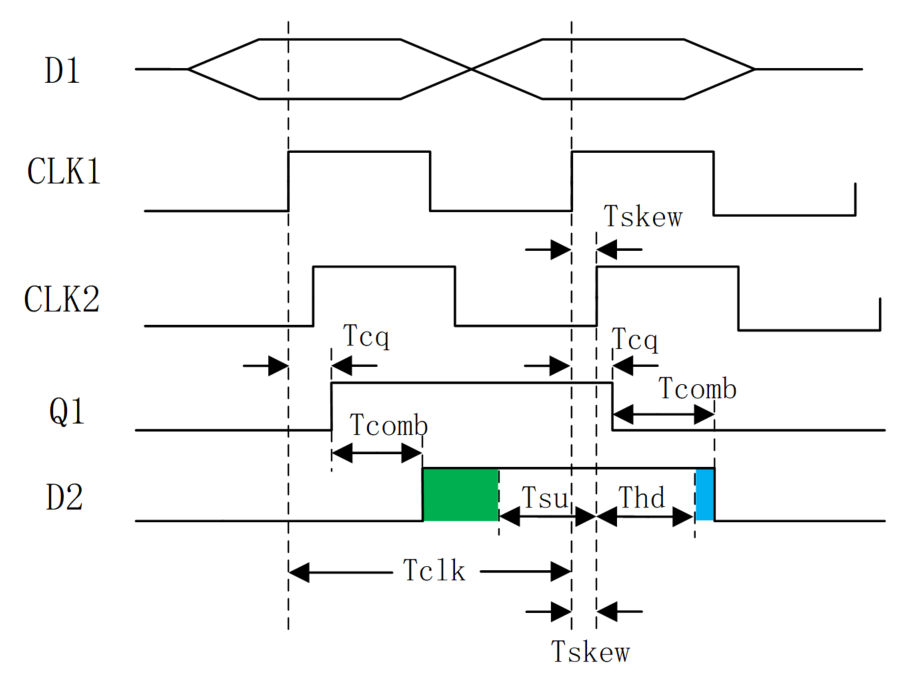

Keywords: setup time, hold time
For digital systems, setup time and hold time are the foundation of digital circuit timing. The stability of a digital circuit system basically depends on whether the timing meets the setup time and hold time requirements. Therefore, this entire section is used to explain in detail the concepts of setup time and hold time.
Basic Concepts
Setup time is the minimum time that data must remain stable before the clock trigger event arrives, so that the data can be correctly sampled by the clock.
Hold time is the minimum time that data must remain stable after the clock trigger event arrives, so that the data can be accurately transmitted by the circuit.
It can be understood in simple terms: before the clock arrives, the data needs to be prepared in advance; after the clock arrives, the data must remain stable for a period of time. Setup time and hold time together form the data stability window, as shown in the figure below.

Section 1.3 Gate DelayA simple D flip-flop has already been introduced. Now let's look at a typical rising-edge D flip-flop to illustrate the origin of setup time and hold time.

G1~G4 NAND gates form a maintain-block circuit, and G5~G6 form an RS flip-flop.
The clock directly acts on gates G2/G3. When the clock is low, the G2/G3 path is closed; when it is high, the path opens for data sampling and transmission.
However, before data reaches gates G2/G3, it passes through NAND gates G4/G1, which introduces time delay. The concept of setup time is introduced to compensate for the delay of data on gates G4/G1. That is, before the clock arrives, the input data at G2/G3 needs to be ready so that the data can be sampled correctly.
After the data is sampled by the clock and before it is transmitted to the RS flip-flop for latching, it also needs to pass through gates G2/G3, which also introduces delay. Hold time is to compensate for the delay of data on gates G2/G3. That is, after the clock arrives, it must be ensured that the data can be correctly transmitted to the input ends of NAND gates G6/G5.
If the data does not meet the setup time or hold time during transmission, it will be in a metastable state, causing transmission errors.
Constraints
Setup Time Constraint
The figure below is a typical data transmission diagram between flip-flops. Here, "Comb" represents combinational logic delay, "Clock Skew" represents clock skew, and data is triggered on the rising edge of the clock.

Before the clock arrives, the data must be prepared in advance in order to be correctly sampled by the clock. This requires the data path to be faster than the clock path, i.e., the data arrival time is less than the data required time. Then the setup time constraint expression is:
Tcq + Tcomb + Tsu <= Tclk + Tskew （1）
The description of each time parameter is as follows:
- Tcq: delay from the register clock terminal to the Q terminal;
- Tcomb: combinational logic delay in the data path;
- Tsu: setup time;
- Tclk: clock period;
- Tskew: clock skew.
Transforming the above equation, the theoretical minimum clock period and maximum clock frequency that the circuit can support are respectively:
最小时钟周期 = Tcq + Tcomb + Tsu - Tskew 最快时钟频率 = 1 / (Tcq + Tcomb + Tsu - Tskew)
Hold Time Constraint
After the clock arrives, the data must remain stable for a period of time. This requires that the data delay time of the previous stage should not be greater than the flip-flop's hold time, so that the data will not be overwritten. Then the hold time constraint expression is:
Tcq + Tcomb >= Thd + Tskew (2)
The description of each time parameter is as follows:
- Tcq: delay from the register clock terminal to the Q terminal;
- Tcomb: combinational logic delay in the data path;
- Thd: hold time;
- Tskew: clock skew.
From equations (1) and (2), the constraints on clock skew, combinational logic delay, and clock period can be derived.
It is recommended that you only need to remember these two most basic constraint expressions. When you need to derive constraints for other parameters, you can derive them then, to avoid memory confusion caused by various derivations.
Timing Diagram of Setup Time and Hold Time
A complex timing diagram regarding setup time and hold time is shown below.
Among them, the green part represents the setup time margin, and the blue part represents the hold time margin. The time margin is actually the difference between the two sides of inequality (1) or (2) when the circuit satisfies the timing constraints.
建立时间裕量为：（时钟路径时间）-（数据路径时间） 保持时间裕量为：（数据延迟时间） - （保持时间 + 时钟偏移）
This diagram is only for easier understanding of the derivation of setup time and hold time constraints. If it causes memory confusion here, it is recommended not to dwell on it (^_^).

Calculation Examples
To better understand the concepts of setup time and hold time, and to facilitate interviews or work, some typical setup time and hold time test problems are listed here for reference.
Example 1:
Considering net delay, the various delay values (unit: ns) of a circuit are as follows, and the clock period is 15ns. Please determine whether the setup time and hold time of this circuit have a violation.

Solution:
The maximum and minimum values of delay are involved here.
Since the timing constraints are required to always hold, equations (1) and (2) are transformed as:
max (data path time) <= min (clock path time) min (data delay time) >= max (Thd + Tskew)
Setup time check:
max (data path time) = 2 + 11 + 2 + 9 + 2 + 2 = 28ns min (clock path time) = 15 + 2 + 5 + 2 = 24ns
Therefore, the setup time has a violation.
Hold time check:
min (data delay time) = 1 + 9 + 1 + 6 + 1 = 18ns max (Thd + Tskew) = 3 + 3 + 9 + 2 = 17ns
Therefore, the hold time has no violation, and the margin is 1ns.
In this example, you should not blindly copy the expressions of setup time and hold time. Instead, you should establish the constraints from concepts such as data path, clock path, and data delay. Therefore, various timing constraints must also be analyzed based on the actual circuit.
Example 2:
A well-known company's interview question: The clock period is T. The maximum setup time of the first-stage flip-flop D1 is T1max, and the minimum is T1min. The maximum combinational logic delay is T2max, and the minimum is T2min. Question: What conditions should the setup time and hold time of the second-stage flip-flop D2 satisfy?
Solution:
The setup time and hold time of the second stage have no direct relationship with the first-stage flip-flop, so T1max and T1min here are distractors.
The example also does not give the clock-to-Q delay and clock skew, so they do not need to be considered here.
Combining the guidance from Example 1, the D2 setup time Tsu and hold time Thd should satisfy:
T2max + Tsu <= T T2min >= Thold
即
Tsu <= T - T2max Thold <= T2min
Many delay types are not considered in this example. When establishing timing constraints, you also need to know what to include or exclude based on the known conditions.
Example 3:
A simple frequency divider circuit is shown below. The flip-flop has a setup time of 3ns, a hold time of 3ns, a logic delay of 6ns, each of the two inverters has a delay of 1ns, and the wire delay is 0. What is the maximum operating frequency of this circuit?

Solution:
Here, the logic delay should be understood as the delay from the clock terminal to the Q terminal. Be careful: it is not the combinational logic delay in the circuit.
Because the Q terminal of the flip-flop is connected to the D terminal, it can be understood as direct transmission between two flip-flops, so the data path has no combinational logic delay, only one inverter delay.
Because there is only one clock, there is also no clock skew, and the inverter delay on the clock path is also a distractor.
Therefore, the timing constraint is:
Tcq + Tbuf + Tsu <= Tclk
The maximum operating frequency of this circuit can be obtained as:
1 / (6ns + 1ns + 3ns) = 100Mhz。
This example is a feedback from the flip-flop to itself. You must carefully analyze the data path and the clock path. Next, let's look at an extended example of this type.
Example 4:
- (1) What are the inherent setup time and hold time of the following circuit?
- (2) What is the maximum operating frequency of this circuit?

Solution:
This circuit has delays on both the data path and the clock path. To achieve the same setup time and hold time constraints as the flip-flop, the timing diagrams of the flip-flop's D terminal and clock terminal CK, as well as the equivalent data terminal Data and clock terminal Clock, are as follows (I have tried very hard to draw it in a concise direction ~_~):

(1) It can be seen from the figure:
The inherent setup time of this circuit is:2.1 + 2 - 1.2 = 2.9ns
The inherent hold time is:1.2 + 1.5 - 2.1 = 0.6ns
From this, it can be seen that the delay on the data path increases the inherent setup time of the circuit, but decreases the inherent hold time of the circuit. Clock skew decreases the inherent setup time of the circuit and increases the inherent hold time of the circuit.
Let me secretly tell you that finding the inherent setup time and hold time of a circuit is actually the process of finding the time margin.
(2) This circuit is still a feedback circuit from itself to itself. Therefore, there is no clock skew, and there is no need to consider the delay of T1 = 0.9ns. So the maximum operating frequency is: 1 / (1.8 + 1.2 + 2)ns = 200MHz
Click me to share notes
<p style="font-size:14px;">Notes should be an extension of the content of this article!</p><br> <p style="font-size:12px;"><a href="../tougao.html" target="_blank">To submit an article, click here</a></p> <p style="font-size:14px;"><a href="./runoob-user-test-intro.html" target="_blank">How to obtain a registration invitation code</a></p> <h3 class="text-muted"><i class="fa fa-info-circle" aria-hidden="true"></i> You must <a href=".." class="runoob-pop">log in</a> before sharing notes!</h3> <p><a href="./runoob-user-test-intro.html" target="_blank">How to obtain a registration invitation code</a></p>